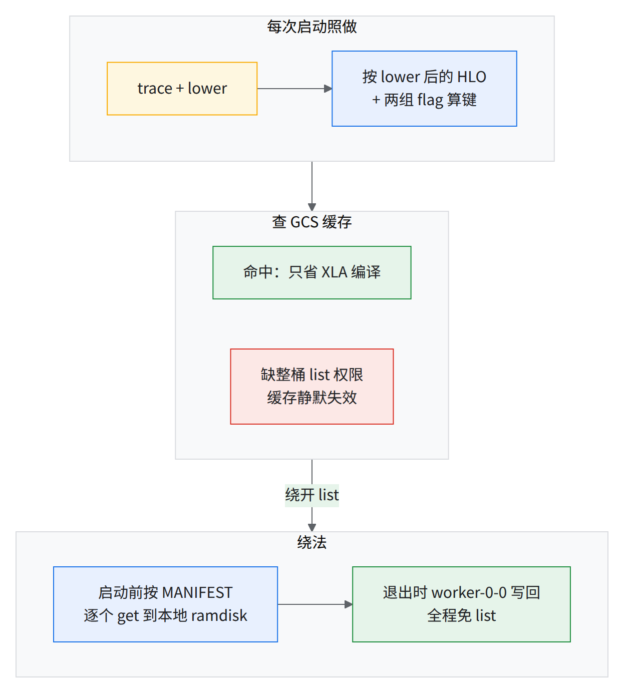
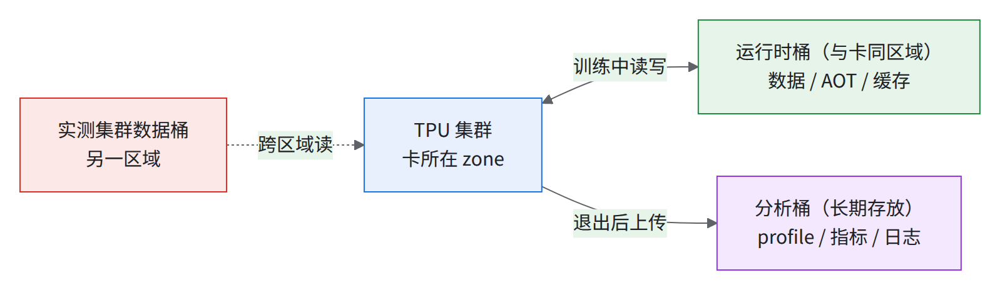
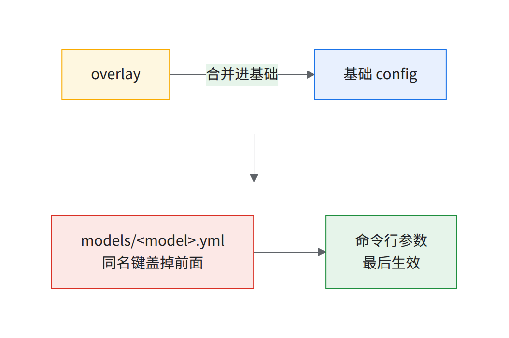
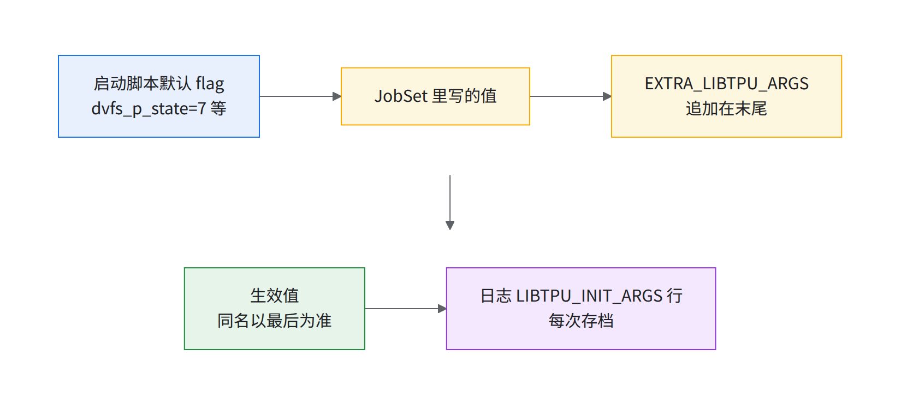
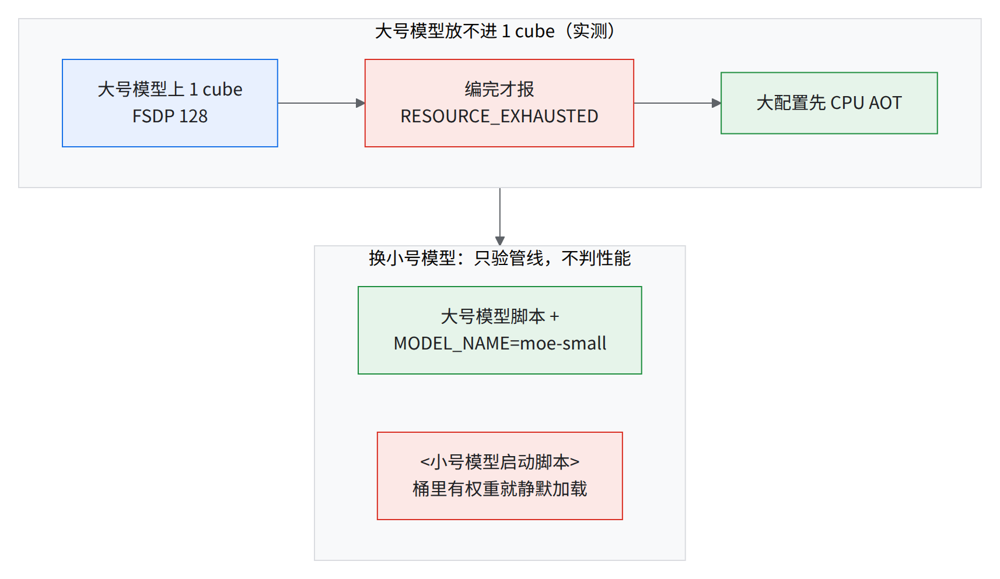
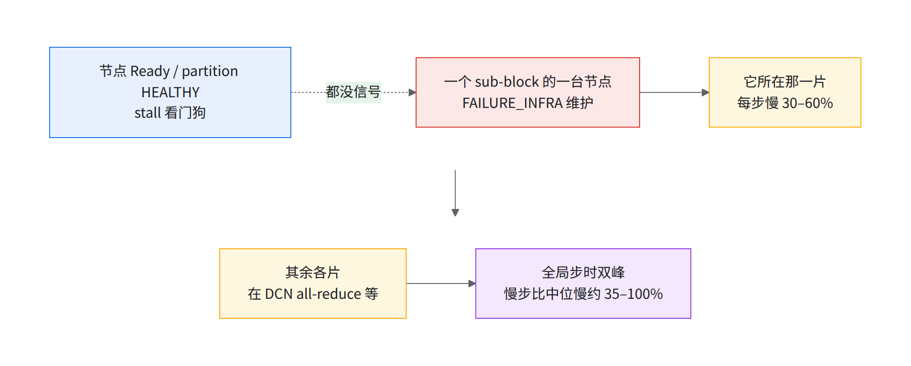
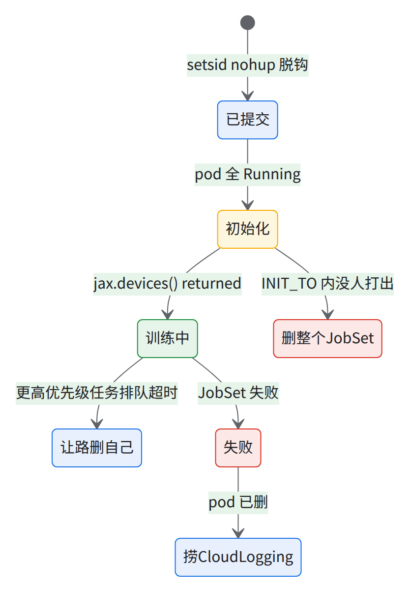

06c 起一个数千芯片多切片训练（复现一份参考训练配置）
目标：第一次跑真实规模训练，并认得「跑对了」的样子。 难点：切片、DCN、共享存储、libtpu flag 任一环错都可能「看起来在跑」；JIT 下从 pod 起来到首步 32–45 分钟（从 apply 起算 40–50），出错也可能 exit 0。
💡状态 / 一句话结论
- 本章是判读样板：私有代码路线照抄跑不起来；要跑的配方见 06b。
- §6.1–6.8 已实测：10+ 片跑通，步时和原任务差 < 1%。
- 这是 JIT 对照；大规模建议提前编译（AOT），Google 可协助。
- 更大规模有已知限制（见 §6.9「规模边界」）。
- 数千芯 10+ × 4x8x8，device 数 = 芯片 × 2
- 约 +40% 10+ 片 JIT 稳态步时 p50（比 1 片）
- 72% 弱扩展效率（以单片为 100%）
- 40–50 min apply 到第一步，两段编译各约 20 min
- 84 GiB 每 device HBM，上限 94.74 GiB
06c 和 06b / 06 / 06a 怎么分工
| 篇 | 回答什么 | 编法 | 给谁用 |
|---|---|---|---|
| 06c（本章） | 数千芯怎么起、怎么认得「跑对了」 | JIT，开卡现编 | 判读样板：大号 MoE 模型 JIT 基线作业，原样复现 |
| 06b | 没有私有代码怎么跑 | CPU 上 AOT 核显存 | 使用方的训练负载：公开 DeepSeek-V3 671B，同样 10+ × 4x8x8 |
| 06 | 卡怎么要到手 | — | 片数、形状、placement、JobSet 字段、多片互联 |
| 06a | 9,216 芯同时读，桶扛不扛得住 | — | Anywhere Cache、带宽配额（20 Tbps）、dashboard、gcsfuse 配置；实测集群实况 |
给使用方的训练负载用 06b 公开配置配方
- 上游 MaxText DeepSeek-V3 671B、公开镜像钉 digest、不用 env tar / 桶 / 私有仓库；同样 10+ × 4x8x8，
RECIPE=dsv3，CPU 上 AOT 编过 10+ 片；阶梯与验收同本章，数字换 06b §7。本章的 JIT 基线作业跑的是私有模型，只作判读样板。为什么是 10+ 个 4x8x8：单 ICI 片公开上限 32 cube = 2,048 芯、没有 144 cube 单片（00 §3），只能 multislice：
ici_*管片内，dcn_*管片间（DCN）。
变量
source ~/runbook-env.sh && rb_env_check PROJECT REGION ZONE CLUSTER DATA_BUCKET（scripts/env.sh）。- 本章用：
$NS$LOCAL_QUEUE$SYSTEM_POOL、$DATA_BUCKET$DATA_PV$DATA_PVC$KSA（§6.1）、$ENV_TAR$GITHUB_SECRET（§6.2）、$RUN_NAME$JOBSET_NAME（§6.3–6.5）；默认值见 env.sh。前提本章脚本（
runbook/scripts/）：
| 文件 | 干什么 | 节 |
|---|---|---|
06-data-pv-pvc.yaml |
数据桶的静态 PV + PVC | §6.1 |
06-gcsfuse-smoke-pod.yaml |
从 pod 里 ls 桶，验证挂载 |
§6.1 |
06-envbuild-pod.yaml + 06-build-env.sh |
构建并上传 Python 环境 tar | §6.2 |
06-jobset.sh |
提交 / 盯盘 / 停删 / 验收 / 步时（RECIPE=dsv3 跑 06b 公开配方）；SLICES TOPO STEPS EXTRA_LIBTPU_ARGS POD_PRIORITY 调阶梯；notin-pools / EXCLUDE_POOLS 排除坏池 |
§6.3–§6.6 |
06a-dsv3-recipe.env + 06a-jobset-dsv3.yaml + 06a-aot-dsv3.sh |
公开配方；CPU AOT 核对 HBM | 06b |
任务画像
运维要对上切片、device 数、镜像 digest、libtpu 版本、生效 LIBTPU flag；其余归训练方。
| 项 | 值 |
|---|---|
| 代码 | 训练方自有的 MaxText 分支（使用方没有访问权；使用方跑公开配方 06b） |
| 运行时 | jax 0.11.0 / jaxlib 0.11.0 / libtpu 0.0.48，公开 Python 基础镜像钉 digest（全文见 §6.4 的 JobSet） |
| 模型 | 一个数百 B 级 MoE 模型（自定义 decoder） |
| 并行 | 10+ 片 × 4x8x8；ici_fsdp_parallelism: 512、dcn_data_parallelism: N、num_slices: N |
| batch | per_device_batch_size × 序列长度按生产配置 → global_batch_size_to_train_on 随片数线性放大 |
| 精度 | FP8（MaxText quantization: fp8_full）+ enable_fp8_absmax_qag: true（§6.4.1） |
| 数据 | 合成（DATASET_TYPE=synthetic），50 步，无检查点 |
一个 JobSet 展开成（每 host 4 chip、每 chip 2 device）：
| 层 | 每片 | 全任务（× 片数） |
|---|---|---|
JobSet → replicatedJob worker 的 replica |
1 | 10+ |
| Slice（4x8x8 = 4 cube） | 1 | 10+ |
| pod = host | 64（= 256 chip ÷ 4） | 片数 × 64 |
| chip | 256（= 4 × 8 × 8） | 数千 |
| device | 512（= 256 × 2） | 数千 |

路线图：从 1 个 cube 爬到 10+ 片（先看这张表）
直接上数千芯，出问题分不清怪环境、单片还是 DCN；上一级 5 条全过才进下一级（§6.5.1）。
| 级 | 形状 × 片数（芯） | 新引入什么 | 脚本 / 关键变量 | 预期：起 pod → 首步 | 预期：稳态步时（p50 比第 2 级 1 片慢多少） | TFLOP/s/device | HBM（编译报告） | 数字从哪来 |
|---|---|---|---|---|---|---|---|---|
| 0 | 4x4x4 × 1 → 4x8x8 × 10+ | 切片、Kueue、多网卡 | 04-gen-jobset.sh（DEVICE_CHECK，不训练） |
约 2–5 min 跑完 | — | — | — | 04 §4.3–§4.8；实测 1 cube 95 s；10+ 片提交 → 全 Completed ≤ 230 s（驱动总耗时 264 s，04 §4.8） |
| 1 | 4x4x4 × 1（64） | env tar、gcsfuse、overlay、MaxText | SLICES=1 TOPO=4x4x4 STEPS=30 MODEL_NAME=moe-small |
约 21 min（apply 起算；训练步第 1 次编译约 10 min + 第 2 次编译约 8 min，见表下注） | 单峰（只验管线，不和后面几级比） | 约 190（MFU 约 15%） | 43.2 GiB | 实测。实测集群 64 芯 CI 的 BF16 / FP8 步时比本级慢约 10% / 20%，commit 不同 |
| 2 | 4x8x8 × 1（256） | 真模型、真 mesh（FSDP 512） | SLICES=1 |
约 40 min（编译约 20 + 再编一遍约 18） | 基准（单峰；后面各级都和它比） | 约 210（MFU 约 20%） | 86 GiB | 实测；预估（≈ 210 TFLOP/s）比实测慢 1–2%；实测集群同 libtpu 的 AOT 步时比本级慢 1–2% / 不到 1%（较新的 nightly） |
| 3 | 4x8x8 × 2（512） | DCN 数据并行 | SLICES=2 |
四十多分钟（两段编译各约 20） | 慢约 25% / 30%（两次，效率 79% / 78%；第一次前半段有双峰，均值慢约 40%） | 约 170（MFU 约 15%） | 84 GiB | 实测，在预估 75–92% 内；另一次掉 host 作废 |
| 补点 | 4x8x8 × 4 / × 8（1,024 / 2,048） | 片数 | SLICES=4 / 8 |
四十多分钟 | 慢约 20% / 30%（效率 82% / 78%，单峰） | 约 180 / 约 170 | 84 GiB | 实测 |
| 4 | 4x8x8 × 10+（数千） | 全规模 DCN | 不设（= JIT 基线作业） | 40–50 min（两段编译各约 20 min） | 慢约 40%（效率 72%；单峰，均值 ≈ p50，0 个慢步） | 约 150（MFU 约 15%） | 84 GiB | 实测（30 步、profiler 关），对上 JIT 基线作业 |
口径：第 1–3 级与补点同批实测，第 4 级另批实测，都用实测集群的 cube；首步从 kubectl apply 起算（pod 全 Running 约 2 min，10+ 片约 2–3 min，不同运行）；步时 = 稳态 p50（§6.6 口径；第 1–3 级与补点开了 profiler，另按步号剔除 step 10–14）。均值与 p50 差不到 1%，仅 2 片第一次差 10%；10+ 片各 replica p50 几乎完全一致（差异远小于 1%）。第 1 级第 2 次编译那约 8 min 没单独查，同一段代码 [推断]。
每级 5 条（verify + steps 自动出前 4 条）：
| # | 查什么 | 过的标准 | 为什么 |
|---|---|---|---|
| 1 | 步数真走了 | 最后一行 completed step: N，N = STEPS − 1；loss 在降 |
Completed / exit 0 不等于训练了（见经验教训第 44 条） |
| 2 | device 数 | jax.devices() returned = 片数 × 芯片数 × 2 |
少了 = 有 pod 没进 JAX 集群 |
| 3 | HBM | Total memory size ≤ 94.74 GiB。实测：1 片 86、2 / 4 / 8 / 10+ 片都是 84 |
第 3 级起有 DCN DP，漏 XLA_FLAGS 会超（§6.4.1） |
| 4 | 步时 | 落在上表区间；均值 ÷ p50 ≤ 1.23（> 1.05 即有慢步，报占比） | 超出按 §6.6 分诊 |
| 5 | 生效 flag | 存档 LIBTPU_INIT_ARGS: 行，与上一级只差有意改的一处 |
第 3、4 级前各跑一次同片数 DCN 基准（04 §4.8，工具自备）：
| DCN 基准（28 个梯度，合并，并发，中位 ms） | 2 × 4x4x4 | 4 × 4x4x4 | 4 × 4x8x8 | 10+ × 4x8x8 |
|---|---|---|---|---|
| 实测集群 | 22.6 / 28.1 | 33.0 / 33.4 | 36.0 | 比 8 片更高（验收以你自己集群的基线为准，见 04 阈值表） |
6.1数据桶与 gcsfuse 挂载
目标：所有 worker 在 /models 看到同一个桶。实测集群用静态 PV/PVC（scripts/06-data-pv-pvc.yaml）：
# 节选，完整见 runbook/scripts/06-data-pv-pvc.yaml（apply 用下面那条 envsubst）
storageClassName: gcsfuse-static
persistentVolumeReclaimPolicy: Retain
mountOptions: [implicit-dirs, client-protocol=grpc]
csi:
driver: gcsfuse.csi.storage.gke.io
volumeHandle: ${DATA_BUCKET} # = 桶名（实测集群 <主数据桶>）
实测集群 PVC <数据卷>（ns default）绑它；第二个桶 <中区数据桶> 挂 /models2（JIT 基线作业没用）。全规模读数据靠 Anywhere Cache 和缓存带宽配额，见 06a。
建（幂等，未改 → unchanged）：
envsubst '$DATA_PV $DATA_PVC $NS $DATA_BUCKET' < "$RUNBOOK_DIR"/scripts/06-data-pv-pvc.yaml | kubectl apply -f -
- pod 注解
gke-gcsfuse/volumes: "true"，sidecar 用内存 emptyDirgke-gcsfuse-cache（tpu7x 无 Local SSD）。 - 桶权限给工作负载身份（实测集群
ns/default/sa/default有roles/storage.objectUser），见 01 §1.5 ③；缺了报FileNotFoundError: GCS bucket 'gs://<主数据桶>' not found or accessible.。
⚠️本书的 Kueue 配置会把 smoke pod（和 §6.2 构建 pod）永远挂在
SchedulingGated（未实测）
- 原因：03 开了
manageJobsWithoutQueueName: true和pod集成，$NS没排除；带队列名也不行，ClusterQueue 只覆盖google.com/tpu。实测集群注释掉了（03 §3.2）。- 做法：非 TPU 的 pod 一律放进已排除的
$INSPECT_NS（rb-inspect，在03-kueue-values.yaml的排除列表里），在那里另建一组同桶 PV/PVC，命令见下 [推断：Kueue 文档称排除的 namespace 不受 Pod 集成管]。- PV 名必须另起：PV 是集群级对象，
claimRef钉死一个 namespace，不能和$NS那组共用。- 三个变量都要显式给：env.sh 在 source 时就按
NS推好了DATA_PV/DATA_PVC，只改NS不会跟着变。- 02 §2.6 的
dnscheck、04 C6 同理改-n $INSPECT_NS（各在本章外，见对应章）。
$INSPECT_NS 版：建 PV/PVC、授权、验证（未实测）：
# 【工作站】source ~/runbook-env.sh 之后
rb_env_check NS INSPECT_NS DATA_BUCKET DATA_PV DATA_PVC KSA SYSTEM_POOL
kubectl get namespace $INSPECT_NS >/dev/null 2>&1 || kubectl create namespace $INSPECT_NS # 04 §4.1 一般已建
IPV=${DATA_PV}-inspect IPVC=${DATA_PVC}-inspect
NS=$INSPECT_NS DATA_PV=$IPV DATA_PVC=$IPVC \
envsubst '$DATA_PV $DATA_PVC $NS $DATA_BUCKET' < "$RUNBOOK_DIR"/scripts/06-data-pv-pvc.yaml | kubectl apply -f -
# 授权：同 01 §1.5 ③，只把 ns 换成 $INSPECT_NS
PN=$(gcloud projects describe $PROJECT --format='value(projectNumber)')
gcloud storage buckets add-iam-policy-binding gs://$DATA_BUCKET --role=roles/storage.objectUser \
--member="principal://iam.googleapis.com/projects/$PN/locations/global/workloadIdentityPools/$PROJECT.svc.id.goog/subject/ns/$INSPECT_NS/sa/$KSA"
kubectl get pv $IPV; kubectl -n $INSPECT_NS get pvc $IPVC # 两个都 STATUS=Bound
NS=$INSPECT_NS DATA_PVC=$IPVC envsubst '$NS $DATA_PVC $SYSTEM_POOL' < "$RUNBOOK_DIR"/scripts/06-gcsfuse-smoke-pod.yaml | kubectl apply -f -
kubectl -n $INSPECT_NS get pod gcsfuse-smoke -o jsonpath='{.spec.schedulingGates}{"\n"}' # 期望空；有 kueue 字样 = 排除没生效，回 03 §3.2
kubectl -n $INSPECT_NS wait pod gcsfuse-smoke --for=jsonpath='{.status.phase}'=Succeeded --timeout=5m
kubectl -n $INSPECT_NS logs gcsfuse-smoke -c main # 期望：桶顶层目录 + SMOKE_OK
kubectl -n $INSPECT_NS delete pod gcsfuse-smoke
- 怎么判过：
schedulingGates为空、podSucceeded、日志末行SMOKE_OK。 - 回滚：
kubectl delete pvc $IPVC -n $INSPECT_NS; kubectl delete pv $IPV（Retain，不删桶数据）；IAM 用remove-iam-policy-binding同参数。 - §6.2 构建 pod 的
06-build-env.sh已默认放$INSPECT_NS（BUILD_NS变量，未实测）；它不挂 PVC，但上传 env tar 要上面那条 IAM。
验证（$NS 版，只适用于没装 Kueue pod 集成的集群；本书的集群用上面的 $INSPECT_NS 版）：
gcloud container node-pools describe $SYSTEM_POOL --cluster $CLUSTER --location $ZONE --project $PROJECT \
--format='value(config.workloadMetadataConfig.mode)' # 先查：必须是 GKE_METADATA，否则下面挂载必失败（见实测框）
kubectl get pv $DATA_PV; kubectl -n $NS get pvc $DATA_PVC # 两个都 STATUS=Bound
envsubst '$NS $DATA_PVC $SYSTEM_POOL' < "$RUNBOOK_DIR"/scripts/06-gcsfuse-smoke-pod.yaml | kubectl apply -f -
kubectl -n $NS wait pod gcsfuse-smoke --for=jsonpath='{.status.phase}'=Succeeded --timeout=5m
kubectl -n $NS logs gcsfuse-smoke -c main # 期望：桶顶层目录 + SMOKE_OK
kubectl -n $NS delete pod gcsfuse-smoke
实测 FAIL：节点池没开 WI（实测集群）
- 卡
Init:0/1，报Workload Identity Federation is not enabled on node：集群级开了、节点池级没开（default-pool和单网卡池为空）。挂载耗时与目录列表没取到。 - 修正：02-create-cluster.sh 给系统池加
--workload-metadata=GKE_METADATA；已有集群gcloud container node-pools update $SYSTEM_POOL --cluster $CLUSTER --location $ZONE --workload-metadata=GKE_METADATA。开 WI 后 §6.2 上传身份变成$KSA。
- default KSA 直接授权（不经 GSA）一次挂上；读 10.3 GB env tar 单流 ≈ 0.32 GB/s（≈ 33 s），多 host 线性扩展（04 C6 的图）。
读写路径（Config param 行与桶列表）：
| 什么 | 路径（本书变量） | 谁写 / 谁读 |
|---|---|---|
| 环境 tar | gs://$DATA_BUCKET/$ENV_TAR |
§6.2 写；每个 pod 启动时经 /models 读 |
| config overlay | gs://$DATA_BUCKET/configs/submit/$RUN_NAME/config_overlay.yml |
§6.3 写；worker 读 |
输出根（base_output_directory） |
gs://$DATA_BUCKET/pretrain/moe-large（= JobSet env GCS_BUCKET） |
MaxText |
| 本 run 目录 | …/moe-large/$RUN_NAME/：train-*.log、tensorboard/ |
worker 0 |
检查点（checkpoint_dir） |
…/moe-large/$RUN_NAME/checkpoints/（JIT 基线作业关着，07 章打开） |
MaxText |
JAX 编译缓存（jax_cache_dir） |
…/moe-large/jax_cache，所有 run 共用（默认 ${GCS_BUCKET}/jax_cache） |
编译时读写；JIT 基线作业的第二次运行 step 0 比第一次短几分钟，可能是命中它 [推断] |
JAX 编译缓存

读图：缓存只省编译那一段，trace + lower 省不掉；权限不够时不报错。
- 实测：1 cube 冷启动三十多 min → 命中缓存约 28 min（两次编译各 133 s → 7 s），trace + lower（~15 min）照做。
- 权限：装了 TensorFlow 时 etils 走 gfile，
makedirs要整桶storage.objects.list；gcsfs（EPATH_USE_TF=false）读也要 list（可用objectListPrefix限前缀）。 - 键含
LIBTPU_INIT_ARGS和XLA_FLAGS（jax 0.11.0cache_key.py_hash_xla_flags），改 flag 不误命中。放gs://<你的桶>/jax-cache/<tag>/，即同区域的gs://$DATA_BUCKET/jax-cache/<tag>/[推断：路径布局照搬，未实测]，pod 身份要有上面那条整桶 list 权限。

读图：运行时桶 gs://mirror-bucket，分析桶 gs://analysis-bucket；虚线 gs://<中区数据桶> 最好搬到卡所在区域。
- 以上为示意桶名，换成你们自己的。
- 使用方：运行时桶就是 env.sh 的
$DATA_BUCKET（与卡同区域）；分析桶 env.sh 没有对应变量，由使用方自定。
| 事项 | 要点 |
|---|---|
| 迁移 | 等在跑的任务结束、补同步再删源端；驱动脚本用 sed -i 改（换 inode），别原地改（§6.10 第 3 条） |
| 权限 | HNS 桶按前缀授权要同时放行 objects/ 和 folders/ |
服务端镜像（rewrite，48 线程，不经本机） |
ckpt、env tar、数据集都走服务端复制，单进程约 2.7–2.84 GB/s；大数据集多进程并行 |
长复制别用 CLOUDSDK_AUTH_ACCESS_TOKEN_FILE |
只读一次，1 h 后 401；用 SDK refresh_handler 每 40 min 换 STS token |
smoke pod 跑完 0/2 Completed，卡 Running 但有 SMOKE_OK 也算过。
回滚：kubectl -n $NS delete pvc $DATA_PVC && kubectl delete pv $DATA_PV（Retain，桶数据不动）；先确认没 pod 在用，否则 pvc-protection 卡 Terminating。
6.2预构建 Python 环境 tar（别让大量机器各自 pip install）
CPU pod 构建一次、worker 只解压，不在每台 host 启动时现装（git clone + uv pip install + apt-get）；原因（因果为推断）见经验教训第 27 条。
构建 pod（default-pool，4 CPU / 12Gi / 40Gi 临时盘）：scripts/06-envbuild-pod.yaml：
# 节选，在构建 pod 里执行，不在本机敲；实际跑下面的 06-build-env.sh
git clone --branch="<分支>" https://github.com/<组织>/maxtext.git /root/maxtext
cd /root/maxtext && git checkout <commit>
uv venv --python 3.12 --seed maxtext_venv && source maxtext_venv/bin/activate
uv pip install -e '.[tpu]' --resolution=lowest && install_maxtext_tpu_github_deps
uv pip install -U --no-deps libtpu==0.0.48 -f https://storage.googleapis.com/jax-releases/libtpu_releases.html
uv pip freeze > /root/maxtext/env-freeze.txt # freeze 一起打进 tar
tar -C / -cf /tmp/env.tar root/maxtext # 再上传到 gs://$DATA_BUCKET/$ENV_TAR
前提：
- 私有代码仓库的 token 放进 Secret（下称
<SECRET>，keytoken源envbuild pod）：bash已存在报read -rs T && kubectl -n $NS create secret generic $GITHUB_SECRET --from-literal=token="$T"; unset TAlreadyExists，换 token 先kubectl -n $NS delete secret $GITHUB_SECRET；JobSet 也引用它。 - （可选）PyPI 代理：实测集群用 Artifact Registry 远程仓库
pypi-remote源envbuild pod（[https://cloud.google.com/artifact-registry/docs/repositories/remote-repo]），不用就export AR_PYPI=：bash构建 pod 身份要gcloud artifacts repositories create pypi-remote --project=$PROJECT --location=$REGION \ --repository-format=python --mode=remote-repository --remote-python-repo=PYPIroles/artifactregistry.reader。 - 桶的
roles/storage.objectUser（§6.1），上传靠它。
跑（默认值见 env.sh，分支和 commit 必填；换版本先 export MAXTEXT_BRANCH=… MAXTEXT_COMMIT=… LIBTPU_VERSION=… ENV_TAR=…）：
"$RUNBOOK_DIR"/scripts/06-build-env.sh --dry-run # 看一眼渲染后的 Pod
"$RUNBOOK_DIR"/scripts/06-build-env.sh # 建 pod → 等 Succeeded → 验 → 删 pod
| 环节 | 做法 |
|---|---|
| 验证（脚本自动） | 日志有 ENV_BUILD_OK 与 VERSIONS jax … libtpu 0.0.48，存 $STATE_DIR/envbuild-*.log；gcloud storage ls -l gs://$DATA_BUCKET/$ENV_TAR 约 10.3 GB |
| 幂等 | 已存在跳过，--force 覆盖；换版本就换 ENV_TAR 名字（注 1） |
| 回滚 / 清理 | gcloud storage rm gs://$DATA_BUCKET/$ENV_TAR（先确认没 JobSet 引用） |
- 注 1：同一目录下可以并存多个 tar，名字里带 commit 和 libtpu 版本，按名字区分。
- 钉死 commit、libtpu、镜像 digest，freeze 留档 → 见经验教训第 26 条。见过的错配：
Unknown command line flag 'xla_tpu_collective_asymmetric_loop'、依赖库版本不匹配报got an unexpected keyword argument。
6.3配置 overlay
放 gs://<桶>/configs/submit/<RUN_NAME>/config_overlay.yml，启动脚本检测到就合并。overlay 按你的训练配置写，运维要对上的键：
dcn_data_parallelism: N
num_slices: N
quantization: fp8_full
enable_fp8_absmax_qag: true # FP8 层生效；日志那行 fallback 警告只针对个别调用点，见 §6.4.1
上传（容器里路径 /models/configs/submit/$RUN_NAME/config_overlay.yml）：
gcloud storage cp <你的 overlay 文件> gs://$DATA_BUCKET/configs/submit/$RUN_NAME/config_overlay.yml
- 验证：
gcloud storage cat gs://$DATA_BUCKET/configs/submit/$RUN_NAME/config_overlay.yml | grep -E '^(num_slices|dcn_data_parallelism):'两行都等于片数；日志有Merging config overlay: /models/configs/submit/<RUN_NAME>/config_overlay.yml。 - 幂等：别改跑过的 run 的 overlay，换
RUN_NAME（重跑时用新的 run 目录）。 - 文件不存在静默跳过合并（
if [ -f … ]），preflight 先查它。 - 回滚：
gcloud storage rm gs://$DATA_BUCKET/configs/submit/$RUN_NAME/config_overlay.yml。
overlay 管不到模型 yml 里已有的键（实测）

读图：overlay 里的模型结构键被 pyconfig 用模型 yml 静默盖掉；override_model_config=true 只让命令行压过模型 yml。
- 例：覆盖文件里减层后的
base_num_decoder_layers被moe-large.yml里模型配置的层数盖掉（日志Config param base_num_decoder_layers打出的是盖掉之后的值）；JIT 基线作业重名的use_tokamax_gmm/use_gmm_v2恰好同值。 - 这类键追加在
bash scripts/<大号模型启动脚本>后（"$@"透传），核对Config param <键>:。
💡规则
num_slices= JobSetreplicas=dcn_data_parallelism（这里都是片数）；ici_fsdp_parallelism= 每片 device 数（4x8x8 = 256 chip = 512 device）——JIT 基线作业其余ici_*/dcn_*_parallelism都是 1 源pyconfig。
6.4JobSet（JIT 基线作业原样，删掉无关字段）
可直接跑的同构 JobSet 见 06b 公开配方。节选运维要对上的字段：
metadata:
name: ${JOBSET_NAME}
labels: {kueue.x-k8s.io/queue-name: ${LOCAL_QUEUE}}
spec:
failurePolicy: {maxRestarts: 0, rules: [{action: RestartJobSet, onJobFailureReasons: [BackoffLimitExceeded]}]}
replicatedJobs:
- name: worker
replicas: N
template:
spec:
completions: 64
parallelism: 64
template:
metadata:
annotations: {cloud.google.com/gke-tpu-slice-topology: 4x8x8, gke-gcsfuse/volumes: "true"}
spec:
hostNetwork: true
dnsPolicy: ClusterFirstWithHostNet
nodeSelector: {cloud.google.com/gke-networking-dra-driver: "true", cloud.google.com/gke-tpu-accelerator: tpu7x}
containers:
- name: jax-tpu
image: <公开 Python 基础镜像@sha256:…>
securityContext: {privileged: true}
command: [bash, -c, "<多行脚本>"] # 解压 /models/${ENV_TAR} → 激活 venv → 合并 overlay → 启动训练脚本
env: # 只列运维要对上的
- {name: ICI_FSDP_PARALLELISM, value: "512"}
- {name: ENABLE_CHECKPOINTING, value: "false"}
- {name: LIBTPU_INIT_ARGS, value: "--megascale_grpc_interface_prefixes=eth1,eth2,lo ..."}
resources: {requests: {google.com/tpu: "4"}, limits: {google.com/tpu: "4"}}
volumeMounts: [/models ← PVC, /tmp/ramdisk ← 200Gi 内存盘, /dev/shm ← 内存盘]
completions: 64：一 pod 一台 host。hostNetwork: true：01 §1.7。queue-name标签填$LOCAL_QUEUE，即 03 §3.5 建的 LocalQueue（实测集群叫multislice-queue）。gke-networking-dra-driver：只有双网卡池有 eth2（02 §2.7 第 5 条）；megascale 是 libtpu 里管 DCN 通信的层。- command 另有打印版本、worker 0 日志同步（
scripts/job_log_sync.sh→/models/pretrain/moe-large/<RUN_NAME>/）、tee，exit code 由${PIPESTATUS[0]}透传；提交后多出 Kueue 注解、4x4x4-state 亲和、gke-tpu-topology: 4x8x8nodeSelector 和 scheduling gate，正常。
flag 怎么生效

读图：越右越优先，能改中间两格，生效值认日志那行。
- 默认 flag 另有 SparseCore collective offload 一组和 async allgather。
XLA_FLAGS不走这条链：默认--xla_disable_hlo_passes=all_gather_decomposer,collective-pipeliner-forward，一设就整个替换 源实测作业启动脚本。
6.4.1 每个要紧参数是干什么的
取值出自 Config param 行和生效 LIBTPU_INIT_ARGS。
并行与 batch
| 参数 | JIT 基线作业 | 干什么 | 约束 / 证据 |
|---|---|---|---|
num_slices |
N（片数） | JAX 认为有几片 | §6.3 规则 |
dcn_data_parallelism |
N（片数） | 片间数据并行，每步 all-reduce 梯度 | 求和在 host CPU |
ici_fsdp_parallelism |
512 | 片内 FSDP 切 512 份 | 不开专家并行（EP=1） |
per_device_batch_size × max_target_length |
按生产配置 | 决定每 device 每步 token 数 | 超 HBM 可能静默挂住（一次韧性演练梯度累积 2 → 101.0 GiB，挂约 6 min 被杀，经验教训第 44 条） |
weight_dtype / grad_dtype / dtype |
float32 / float32 / bfloat16 | 参数 / 梯度 / 计算的精度 | 梯度精度决定 DCN 流量 |
显存与编译
| 参数 | JIT 基线作业 | 干什么 | 约束 / 证据 |
|---|---|---|---|
remat_policy |
custom：按张量选存 HBM 还是重算 |
重算换显存 | 多存常变慢 |
scan_layers |
true | 按一层编译再循环 | 不 scan 编译更久、稳态略快 |
XLA_FLAGS |
关 all_gather_decomposer、collective-pipeliner-forward |
前者防止 all-gather 被改写成 all-reduce；后者关掉数据并行的通信重叠，省显存的是它（注 1） | 有片间数据并行就必须带：不带时大号模型两片数据并行要 103.7 GiB；单片约 +3% |
| HLO 通信重排 | 关 | 一组私有的 XLA HLO pass（未开源），改集合通信的切法、落点和调度顺序；本书只讲理念和判据，实现需读者自行开发 | 只在 AOT 编译时生效，本章 JIT 基线不开 |
compiled_trainstep_file |
空（= JIT） | 加载 AOT 程序 | JIT 10+ 片到 step 0 四十多分钟；AOT 编 512 device 约一小时 |
- 注 1：该 MaxText 分支自己做重叠，所以敢关，06b 同样。反证：大号模型 2 × 4x8x8 只设
XLA_FLAGS=--xla_disable_hlo_passes=all_gather_decomposer（pipeliner 重新打开），HBM 108.6 GiB，加载时 OOM（Attempting to allocate 1.14G … 1.08G free）。
FP8
| 参数 | JIT 基线作业 | 干什么 | 约束 / 证据 |
|---|---|---|---|
quantization: fp8_full + use_qwix_quantization + fp8_format: hybrid + use_tokamax_gmm |
开 | matmul 用 FP8（hybrid 以 Qwix 源码为准） |
部分层保留 BF16 |
enable_fp8_absmax_qag |
true，FP8 专家层生效 | 先量化再 all-gather，通信减半 | absmax QAG is not supported ... falling back 不代表没生效；看 XProf 里 all-gather 的 dtype（注 1） |
- 注 1：警告带
@functools.lru_cache(maxsize=1)（moe.py），任一调用点回退就打一次（逐调用点判定）。回退 [推断] 来自保留 BF16 的那几层。
网络与功耗（LIBTPU flag）
| flag | JIT 基线作业 | 干什么 | 证据 / 建议 |
|---|---|---|---|
--megascale_grpc_interface_prefixes=eth1,eth2,lo |
开 | DCN 用两张网卡 | 要 eth2，所以带 §6.4 的 nodeSelector（注 1）。 |
--xla_tpu_prefer_async_allgather_to_allreduce=true |
开（默认） | 防止 all-gather 被改写成 all-reduce、DCN 字节翻倍 | 小号模型 2 片约 −20% |
--xla_tpu_dvfs_p_state=7 |
开（默认，启动脚本的 XLA flag 默认值） | 功耗档拉满（默认 3） | 预期 bf16 0–5%、fp8 8–15%；高负载下的稳定性仍在确认（注 2） |
--xla_tpu_enable_sparse_core_collective_offload_all_reduce=true |
开（默认） | all-reduce 卸到 SparseCore | 与一类已知静默数值问题有关，用数值 canary 盯（见经验教训第 26 条） |
--megascale_grpc_premap_memory_bytes |
不设 | DCN 预分配 host 内存 | 开检查点才要紧（见经验教训第 25 条）。别和 TPU_PREMAPPED_BUFFER_SIZE（默认 4 GiB；调大要改 MaxText，上游未合入，需验证）混 |
--megascale_grpc_transport_stall_threshold=2s 等 4 个诊断 flag |
不设（诊断运行设了） | stall 看门狗 + collective 延迟 | 与慢步无关（§6.6 ④） |
-
注 1：数千芯 DEVICE_CHECK 一次过；≤4 片 DCN 基准看不出双网卡差别（按双网卡建网仍是经验教训第 20 条的要求）。
-
注 2：P7 档实测 host matmul 中位提升约 4% 到一成多，但最慢 host 只快不到 2%，而同步训练看最慢 host。高负载下的稳定性仍在确认；不开就在
EXTRA_LIBTPU_ARGS写--xla_tpu_dvfs_p_state=3。
✅改 flag 的规矩
EXTRA_LIBTPU_ARGS追加、换RUN_NAME、只改一处、≥ 20 稳态步，比 p50 和均值；先确认 libtpu 认得（否则Unknown command line flag）。
6.5提交与盯盘
全走 scripts/06-jobset.sh（render 按 SLICES / TOPO 改片数、形状、FSDP 度；不设 = JIT 基线作业原样，已逐行 diff）：
S="$RUNBOOK_DIR"/scripts/06-jobset.sh
$S preflight # PVC Bound、Secret、LocalQueue、env tar、overlay 在且片数对得上；报 HEALTHY 节点数（应为 片数 × 64）
$S apply # preflight 通过才 apply；默认先过 05-avoid-manual-slices.py 避开手工 Slice
$S watch # JobSet / Workload / N 个 Slice / 全部 Pod 概况，反复跑
$S logs # 跟 worker-0-0 的 jax-tpu 日志
$S steps # 出 step 以后：稳态 p50 / 均值 / 慢步占比 / TFLOP/s / MFU / HBM（口径见 §6.6，对 JIT 基线作业的原始日志复算与 §6.6 表一致）
提交后依次看到源worker 日志
- 准入 Workload
jobset-$JOBSET_NAME-xxxxxADMITTED。 - 切片激活 N 个 Slice（名字是
$NS-jobset-$JOBSET_NAME-<随机后缀>-worker-<i>，i 从 0 到片数 − 1，形状 4x8x8）ACTIVATING → ACTIVE。 - Pod 起来 片数 × 64 个 Running（2/2：训练容器 + gcsfuse sidecar）。
- JAX 连上 worker-0-0 依次打出
TPU runtime versions: jax=0.11.0 jaxlib=0.11.0 libtpu=0.0.48、Merging config overlay、jax.devices() returned <设备数> devices。
幂等：同名同内容 unchanged；同名改内容被拒，先 delete 或换名。
停 / 删：
$S stop # Workload spec.active=false：驱逐、释放 N 个 Slice、不再排队；JobSet 对象留着 → $S resume 重新排队
$S suspend # 另一种：patch JobSet spec.suspend=true（Kueue 管理下的行为「未实测」：没在集群上跑过，Kueue 自己也写 suspend，优先用 stop） → $S unsuspend
$S delete # 删 JobSet（Workload / Slice / Pod 随之回收），30 s 后检查 Slice 是否已释放
stop语义：[https://kueue.sigs.k8s.io/docs/concepts/workload/]（「…will cause a running workload to be evicted and not be requeued」）。delete后 Slice 超 15 分钟还在 → 05、08 告警 #4 / #15。
正常时间线（JIT 基线作业）：
| 阶段 | 时间 |
|---|---|
| 切片激活（10+ 片） | 正常 112–197 s；JIT 基线作业因巡检切片占 cube 有 7 片重试（最慢 worker-4 7 次、368 s），任务级 370 s |
jax.devices() → step 0 完成 |
约 1 min + 四十多分钟（逐段见 §6.6 ①） |
验收（MTC replicator 失败也会被包成 StopTraining exit 0 → 见经验教训第 44 条）：
$S verify
查这些 源train-<时间戳>.log：
| 查 | 期望（JIT 基线作业） |
|---|---|
| JobSet conditions | Completed=True AllJobsCompleted |
最后一行 completed step: N |
N = STEPS − 1 = 49 |
step 0 / 3 / 49 耗时与 loss；jax.devices() 与版本行 |
step 0 约 18 min、50 步 loss 降约 5%；device 数 = 芯片 × 2 |
生效 LIBTPU_INIT_ARGS |
存到 $STATE_DIR/run-$RUN_NAME/ |
gs://$DATA_BUCKET/pretrain/moe-large/$RUN_NAME/ |
train-*.log（JIT 基线作业的日志是 train-<时间戳>.log） |
然后 $S delete（跑完的 JobSet 不会自己消失），Slice 拆没拆看 $S watch 的「ACTIVE slices」行 [需验证：语料里没有完成瞬间的 Slice 快照]。
6.5.1 逐级命令（对应开头「路线图」）
每级换 RUN_NAME / JOBSET_NAME，各一份 overlay。时间预算（apply → 首步，训练段按步数另加；编译全冷）：
| 级 | 步数 | apply → 首步 | 再留一次重跑 |
|---|---|---|---|
| 1（1 cube 小号模型） | 30 | 约 21 min | ＋同样时长 |
| 2（1 片 4x8x8） | 50 | 约 40 min | ＋同样时长 |
| 3（2 片） | 50 | 四十多分钟 | ＋同样时长 |
| 补点 4 / 8 片 | 50 | 四十多分钟 | — |
| 4（10+ 片） | 30（本书实测）/ 50（JIT 基线作业原任务） | 40–50 min | ＋同样时长 |
| 补点下一档 | 30 | 约 50 min | — |
数据表与出处（14 行）
| 规模 | apply → jax.devices() 返回（min） | 第一遍编译（min） | 第二遍 + 第 0 步（min） | apply → 第 0 步（min） |
|---|---|---|---|---|
| 1 片 | 约 3 | 约 20 | 约 18 | 约 40 |
| 2 片 | 约 3 | 约 22 | 约 19 | 约 44 |
| 4 片 | 约 3 | 约 22 | 约 19 | 约 44 |
| 8 片 | 约 4 | 约 22 | 约 19 | 约 46 |
| 10+ 片 | — | — | — | 40–50 |
| 下一档 | 约 7 | 约 22 | 约 21 | 约 50 |
| 冷缓存拆解（1 cube） | 编组 + 起 pod + TPU 初始化 + 建模型 | 约 2 min | ||
| 冷缓存拆解（1 cube） | 追踪（Python 跑一遍训练步） | 约 3 min | ||
| 冷缓存拆解（1 cube） | 降级成 StableHLO（几乎全在 Pallas 手写核） | 约 12 min | ||
| 冷缓存拆解（1 cube） | XLA 编译 | 约 2 min | ||
| 冷缓存拆解（1 cube） | 重新追踪（切分声明对不上） | 约 15 s | ||
| 冷缓存拆解（1 cube） | 再降级一遍 | 约 12 min | ||
| 冷缓存拆解（1 cube） | 再 XLA 编译一遍 | 约 2 min | ||
| 冷缓存拆解（1 cube） | 第 0 步执行 | 约 15 s |
出处：本书实测的各级训练运行的 steps.txt（apply→devices / hbm / step0 三行）；本书冷缓存实测的阶段表（1 cube）。单独打开 SVG
分段口径：jax.devices() 返回 → 打出 Total memory size 行 = 第一遍（追踪 + 降级 + XLA 编译）；Total memory size 行 → completed step: 0 = 第二遍（后来查明是 step 0 输入带切分声明导致 tracing cache miss 重做）+ 第 0 步执行。六次都是冷编译（JAX 缓存指到本地 ramdisk）。拆解那一条是减层、单 cube 的小配置，所以总长比上面短，不是同一配置。分钟数都取整，逐段相加与总长可能差 1。
- 「训练步编译约 20–22 min + 同一个程序再编一遍约 18–21 min」（见 §6.6 ①），与片数几乎无关——阶梯省卡时不省墙钟；第 1–3 级光到首步就要一百多 min。
- 每级留一次重跑（
maxRestarts: 0、无检查点）：阶梯实测的 8 个训练 JobSet 里就有 1 次在 step 0 之后 18 s 掉了一台 host，整个 JobSet 失败、四十多分钟作废（见经验教训第 38 条）。
⚠️共享集群上，默认
POD_PRIORITY=（清空）再 render 核对
不清空会静默抢占集群上的其他作业；默认
high是为独占集群定的（04「优先级」），值 800（03-kueue-priority.yaml）。集群上已有同名 PriorityClass 时先kubectl get priorityclass看值，别撞名。核对：
$S render | grep -n priorityClassName应无输出；非空且有别人的、已准入、优先级更低的 Workload 时脚本打██ WARN（不拦）。
S="$RUNBOOK_DIR"/scripts/06-jobset.sh
# 优先级：脚本默认 POD_PRIORITY=high，不 export 也会写进 YAML。
# · 使用方独占集群、还没有生产任务：默认即可。和生产任务共用时，验收级给低优先级（会被抢，报告里写明），正式训练给高优先级。
# · ⚠ 共享集群：一律 export POD_PRIORITY= （清空），render 后确认没有 priorityClassName——见下方警告框
# POD_PRIORITY 写的是普通 PriorityClass（preflight 会查它存在）；实测集群没有 WorkloadPriorityClass，写 WPC 标签会静默卡死（04「验收任务的优先级」）
# export POD_PRIORITY=<PriorityClass 名> # 或 export POD_PRIORITY=（共享集群）；现有的名字：kubectl get priorityclass
# 第 1 级：1 cube 冒烟 —— 用小号模型，大号模型放不进 1 cube（见下）
# 用大号模型的启动脚本换 MODEL_NAME，别用 TRAIN_SCRIPT=<小号模型启动脚本>（那个脚本会静默加载小号模型预训练权重，见下）
export RUN_NAME=my-run-c1 JOBSET_NAME=my-run-c1 SLICES=1 TOPO=4x4x4 STEPS=30 MODEL_NAME=moe-small
$S overlay && $S apply # apply 内含 preflight，并默认过一遍 05-avoid-manual-slices.py（AVOID_MANUAL=0 关）
$S watch; $S logs # 反复看；出 step 之后：
$S steps; $S verify; $S delete
# 第 2 级：1 片 4x8x8，真模型真 mesh
export RUN_NAME=my-run-s1 JOBSET_NAME=my-run-s1 SLICES=1 TOPO=4x8x8 STEPS=50; unset MODEL_NAME
$S overlay && $S apply
$S watch; $S logs # 反复看；出 step 之后：
$S steps; $S verify; $S delete
# 第 3 级：2 片，第一次过 DCN（之前先跑 2 片 DCN 基准，见 04 §4.8）
export RUN_NAME=my-run-s2 JOBSET_NAME=my-run-s2 SLICES=2
$S overlay && $S apply
$S watch; $S logs
$S steps; $S verify; $S delete
# 第 4 级：10+ 片 = JIT 基线作业原样
export RUN_NAME=<作业名> JOBSET_NAME=<作业名> SLICES=<片数> # ← 换成你的片数
$S overlay && $S apply
$S watch; $S logs
$S steps; $S verify; $S delete
为什么第 1 级换小号模型、怎么换

读图：绿框是对的换法；红框那个脚本 JobSet 挡不住它加载权重。
- 大号模型：
RESOURCE_EXHAUSTED: … HLO temporaries (97.12G) exceeds available HBM (94.74G)。FSDP 512 下放得下；FSDP 128 时按 FSDP 切的状态变 4 倍，Temp 超过可用上限。 - 小号模型 64 芯放得下（FSDP 128）；大号模型脚本是
MODEL_NAME=${MODEL_NAME:-"moe-large"}，加一条 env 即可。 scripts/<小号模型启动脚本>写LOAD_PARAMETERS_PATH=${LOAD_PARAMETERS_PATH:-"<预训练 ckpt>"}默认值，JobSet 写LOAD_PARAMETERS_PATH: ""挡不住（:-把空串当没设），会静默加载预训练权重，loss 起点不再是随机初始化的值，也没有XLA_FLAGS默认值。
其余几条
| 要点 | 说明 |
|---|---|
| 第 2 级是尺子 | 只少 DCN；第 4 级慢了先拿它除，分清片内还是片间（§6.6 ③） |
| 短跑避开 profiler 起点 | profile 从 step 10 抓，STEPS 更小编完就报 Profiling requested but initial profiling step set past training final step；≥ 14 步或关 profiler |
| 短跑 loss 不跨片数比 | 片数越多 50 步降得越少（实测 50 步降幅：1 片约 15%，2 片约 10%，JIT 基线作业 10+ 片约 5%）；lr 还在 warmup[推断：每步更新量相近、batch 更大 → 同样步数下降幅小]。按 §6.6 ⑤ 比 |
6.6结果判读（「正常」的样子）
前四列从原始日志算，最后一列（本书 10+ 片实测）用同一口径：稳态 = step ≥ 3，剔除低于中位 0.3 倍的步和 profiler 假象步（> 2.1 × 中位），取 worker-0-0。
| 指标 | 第一次运行 | 第二次运行 | 运行 A（诊断 flag，profiler 关） | 运行 B（= 运行 A + 关 host reduction） | 10+ 片本书实测（profiler 关） |
|---|---|---|---|---|---|
| step0 自报（含第二次编译，§6.6 ①） | 约 18 min | 约 13 min | 约 19 min | 约 18 min | 约 18 min |
| 起 pod → 首步 min | 四十多 | 三十多 | 四十多 | 四十多 | 四十多 |
| p50 弱扩展效率（1 片 p50 ÷ 本列 p50） | 71% | 72% | 72% | 39% | 72% |
| p90 比本列 p50 慢 | 60% | 50% | 15% | 不到 1% | 1–2% |
| 均值比本列 p50 高（真实吞吐看均值） | 约 20% | 约 15% | 约 6% | 1–2% | 不到 1% |
| 慢步（> 1.2 × p50，口径）占比 | 约四成 | 约三成 | 约一成（集中在一刻钟内出现） | 约 6%（整体慢在 p50，不是慢步） | 无（最慢比 p50 慢不到 3%） |
| TFLOP/s/device（p50） | 约 150 | 约 150 | 约 150 | 约 85 | 约 150 |
| MFU（÷1,153.5 = BF16 峰值口径，FP8 run 也按它除，见 §6.6.1「分母」行；按 FP8 峰值 2,307/device 算则减半）[推断：口径换算] | 约 15% | 约 15% | 约 15% | 约 7% | 约 15% |
| HBM（编译报告 Total）GiB / 94.74 | 84 | 84 | 84 | 78 | 84 |
| loss（首 → 末） | 降约 5%（50 步） | 降约 10%（80 步） | 降约 10%（80 步） | 降约 10%（80 步） | 降约 2%（30 步） |
数据表与出处（4 行）
| run | 步时形态 | 慢步占比 | 平均比全快步慢 |
|---|---|---|---|
| 第一次运行 | 两峰（快步贴着中位 + 慢步） | 约四成 | 约 25% |
| 第二次运行 | 两峰（快步贴着中位 + 慢步） | 约三成 | 约 15% |
| 运行 A（诊断 flag） | 两峰，慢步比前两次明显少 | 约一成 | 约 6% |
| 运行 B（关 host reduction） | 单峰，全是慢步（比第一次运行中位慢 80–180%） | 全部 | — |
出处：本书实测（worker 日志逐步解析与同口径汇总，本图断言步数一致）；本章 §6.6。单独打开 SVG
口径：step ≥ 3，剔除 profiler 假象步；点位按相对第一次运行中位数（replica 0）的百分比、取到 5% 一档画（示意，不是逐步原值），快 / 慢分界 = 慢约 20%。
注：运行 B 列是跑到第 56 步时的截面；跑完 80 步按 worker-5-0 日志重算，p50 效率 39%、均值比 p50 高 1–2%、最慢比 p50 慢约 50%，loss 同 [推断]。
判「正常」：快步 p50 比 1 片慢约 40%（效率 71–72%），均值 ÷ p50 ≤ 1.23（JIT 基线作业三个 run 均值比 p50 高约 20% / 约 15% / 约 6%）。均值比快步慢：r1 约 25%、r2 约 15%、运行 A 约 6%（运行 A 的慢步集中在一刻钟内出现）；均值 ≈ 快步是优化目标，不是验收线。本书 10+ 片实测均值和 p50 差不到 1%，但只跑了 30 步，没出慢步可能是没用到坏 cube，也可能是没赶上维护 [推断：10+ 片实测的 cube 名单没核]。
6.6.1 怎么判数字
① 日志里程碑（JIT 基线作业第一次运行的 worker-0-0）：
| 距上一行 | 日志 | 这一段在干什么 |
|---|---|---|
| — | gcsfuse sidecar waiting for SIGTERM |
桶挂上（计时起点） |
| 54 s | TPU runtime versions: … libtpu=0.0.48、Merging config overlay |
解压 10.3 GB tar |
| 79 s | jax.devices() returned <设备数> devices (elapsed …s)，自报约 55 s |
大量进程连成 JAX 集群 |
| 约 22 min | Total memory size: … GB（约 84；MaxText 除的是 1024³，实为 GiB） |
训练步第 1 次编译（lower().compile()）← 看 HBM（注 1） |
| 约 18 min | Memstats: After params initialized 每 device 约 10 GiB 量级 |
不是参数初始化：训练步再编一遍（注 2） |
| 71 s | completed step: 0, seconds: <约 18 min 的秒数> |
|
| — | completed step: 2, seconds: <约 1 min 的秒数> |
大号 MoE 模型的 step 2 是第二次编译（30–150 s，§6.6 口径） |
| — | completed step: 4, seconds: <稳态步时> |
进入稳态 |
- 注 1：一次 1 cube 复测（大号模型结构、减层）把它拆开，大头在 Python：参数初始化编译 ~10 s → trace 约 3 min（py-spy：约 85% 在 megablox
tgmm_v2的zero_out_start/fill_zero逐个发 DMA）→ StableHLO lowering 约 12 min（全在 Pallas Mosaic，约七成是 lowering_cache 的 dataclass__eq__）→ XLA 编译只约 2 min（HLO passes 41 s，SPMD 分区 ~5 s；backend 70 s；codegen 10 s）。 - 注 2：step 0 调
p_train_step(state, batch, rng)报TRACING CACHE MISS … different input types: data['inputs'] … now i32[…]({Auto: (…)})：lower()的shaped_batch不带 sharding、真 batch 带，于是再 trace（15 s）+ lower（12 min）+ 编译（2 min，HLO 不同，持久缓存不中）一遍。
两段各约 20 min 没新行，别杀
| 级（实测，约数，min） | jax.devices() → Total memory size |
→ step 0 |
|---|---|---|
| 第 1 级小号模型 | 10 | 18 |
| 第 2 级 | 20 | 38 |
| 2 片到下一档 | 约 22 | 41–43 |
- 10+ 片 / 下一档 pod 起到
jax.devices()比 2–8 片多几分钟，首步多出的几分钟在这。超 60 min 没新行按经验教训第 44 条查。step 0 自报的约 18 min 从Total memory size那行之后约 1 min 算起，只含第二次编译加第一步 [推断：按时间戳倒推]。
第二段能省（未验证）：给 maxtext_utils.get_shaped_batch() 的 ShapeDtypeStruct 带上 sharding.get_input_data_sharding(...)，或直接用第一次的 compiled：1 cube 复测配置省冷缓存约 15 min、热缓存约 13 min，JIT 基线作业 10+ 片约 18 min [推断] 源没改代码验证。
拆编译各段的开关（开销小：同一配置编到 OOM，全开比不开只多不到 1 min（都约 18 min））：
| 开关 | 看什么 |
|---|---|
JAX_LOG_COMPILES=1 |
tracing / jaxpr→MLIR / XLA 各段秒数 |
JAX_EXPLAIN_CACHE_MISSES=1 |
cache miss 原因（上面那条就这么查到） |
JAX_DEBUG_LOG_MODULES=jax._src.compiler,jax._src.compilation_cache |
持久缓存 hit / miss / write |
只在 worker-0-0 加 TPU_STDERR_LOG_LEVEL=0 TPU_MIN_LOG_LEVEL=0 TPU_VMODULE=hlo_pass_pipeline=1 |
每个 pass 耗时；再 kubectl exec 用 py-spy record --nonblocking 抓 Python 栈 |
| 项 | 取法 | 容易错在哪 |
|---|---|---|
| 分子 | MaxText 自报 TFLOP/s/device：模型 FLOPs（MoE 只算激活专家）÷ 步时 |
自定义算子里的部分 FLOPs 可能没计入，MFU 偏低 [推断]，只能横比 |
| 分母 | 1,153.5 = 每芯片 BF16 峰值 2,307 ÷ 每芯片 2 个 device | FP8 也除 BF16 峰值。2,307 是 P7 频率，默认档约 1,996 [推断：按周期比 ×0.865，依据一次 P7 对比实测]，报 MFU 写明功耗档 |
| 每芯片 | × 2 | 外部数字先确认是每 chip 还是每 device，两者差 2 倍 |
| 步时 | 口径同 §6.6；p50 和均值都报 | 只报 p50 藏掉双峰（第一次运行均值比 p50 高约 20%） |
③ 弱扩展效率（第 2 级步时 ÷ 第 N 级；两轮实测，各一次，JIT）：
| 片数（芯） | p50 比 1 片慢 | TFLOP/s/device | 效率（1 片 p50 ÷ 本行 p50） |
|---|---|---|---|
| 1（256） | 基准 | 约 210 | 100% |
| 2（512） | 约 25% / 30%（两次） | 约 170 / 约 170 | 79% / 78% |
| 4（1,024） | 约 20% | 约 180 | 82% |
| 8（2,048） | 约 30% | 约 170 | 78% |
| 10+（数千）本书实测 p50 | 约 40% | 约 150 | 72% |
| 下一档本书实测 p50 | 更慢 | 更低 | 更低 |
| 10+，参考 JIT 基线作业快步 p50 | 约 40% | 约 150 | 71% |
| 10+，均值运行 A（慢步约一成） | 约 45% | — | 68% |
| 10+，均值第一次运行（慢步约四成） | 约 70% | — | 59% |
JIT 基线作业三个 run 为 71–72%。
数据表与出处（9 行）
| 片数 | 芯片 | 来源 | 比 1 片慢（分档） | 效率 |
|---|---|---|---|---|
| 1 | 256 | 本书实测 | 基准 | 100% |
| 2 | 512 | 本书实测 | 25% | 79% |
| 2 | 512 | 本书实测 | 30% | 78% |
| 4 | 1,024 | 本书实测 | 20% | 82% |
| 8 | 2,048 | 本书实测 | 30% | 78% |
| 10+ | 数千 | 本书实测 | 40% | 72% |
| 10+ | 数千 | 参考 JIT 基线作业 | 40% | 71% |
| 10+ | 数千 | 参考 JIT 基线作业 | 40% | 72% |
| 10+ | 数千 | 参考 JIT 基线作业 | 40% | 72% |
出处：本书实测的各级运行的 steps.txt（RESULT 行：step ≥ 3、剔除 profiler 窗口 10–14）；本书实测 10+ 片运行的 steps.txt（RESULT 行：step ≥ 3、不剔除，profiler 关）；本书实测（参考 JIT 基线作业三个 run 的 s_p50）。单独打开 SVG
2 片两次样本、4 片一次，都是非独占时段，所以「4 片比 2 片快」还不能当结论。10+ 片的均值（有双峰慢步）效率只有 59–68%，见 06c §6.6 ③。「比 1 片慢」= N 片 p50 ÷ 1 片 p50 − 1，按 ≥10% 取 5 的倍数写。
- 读图：大头在 1 → 2 片（第一次有 DCN DP），之后片数越多效率越低：8 片 78% → 10+ 片 72%，再往上一档继续下降；[推断] 与前面的 DCN 基准同向（梯度 all-reduce 耗时随片数增长）。10+ 片各 replica 间 p50 几乎一致（差远小于 1%）；4 片比 2 片快约 4–6%，单样本没查。
- 判据：第 3 级低于约 75% 先查网络（04 §4.8 基准、网卡、MTU），75–80% 正常 [推断：各 1–2 个样本，不是独占时段；2 片同期 DCN 基准 PASS]。
④ 双峰怎么查：快峰在 p50 上下约 2% 内，慢步比 p50 慢约 35–100%（第一次运行约 35–80%、第二次约 35–100%）。
💡根因已查清根因：一个 sub-block 计划外维护（A/B 证实）。
- 一个 sub-block 里一台节点整天计划外维护（
maintenanceReasons: FAILURE_INFRA），健康信号全程正常（见经验教训第 48 条）。- A/B：同时间窗含该 sub-block 的运行连续 14 步慢、去掉它的运行 0 步慢；完全不重叠的另一次运行 65 步全快，中位对应弱扩展效率 72%。
- 交付第一件事：排除在维护的 cube（
upcomingMaintenance与 sub-block 维护状态，01 §1.3、08 §8.1 第 6 条假象）。

排查顺序：
| 步 | 做什么 | JIT 基线作业的结果 |
|---|---|---|
| 1 定位 | 同一步比 10+ 个 replica（worker-<i>-0），按墙钟对时，别按自报 seconds（滞后 2 行） |
差在 2% 以内 → 全局同步点在等。某片一直慢 → 慢片的 collective_end_to_end_latencies 反而最低（按片找慢片见经验教训第 45 条） |
| 2 取证 | 慢步窗口谁在用 DCN、有没有建删片；加 4 个诊断 flag + TPU_STDERR_LOG_LEVEL=1；逐 host 采样（duty cycle、HLO 队列、eth1/eth2 吞吐、TCP 重传），如自建的采样 DaemonSet |
第一次运行稳态时没有第二个 ≥ 1,024 芯作业；运行 A 慢步与同期其他任务建删片不能说因果。两次运行所有 host 看门狗 0 次、libtpu 日志 0 行 → 排除 host 线程卡 > 2 s，没排除 DCN 慢路径。采样只写 stdout，pod 删了就没 |
| 3 A/B | 单变量换 cube 组合（先于换 flag） | 上面那组含 / 不含该 sub-block 的对照就这么定位。transport_stall_threshold 不是原因，运行 A 慢步少是那段维护扰动少 [推断：按维护窗口时间对齐] |
| 项 | 值 |
|---|---|
| 规模与数据 | 1 片 4x8x8（512 device），全局 batch 与序列长度同生产配置；真数据；初值从参考实现的 checkpoint 转来 |
| 判定 | 逐步算相对差：step 0 一道阈值，前 N 步平均一道更紧的阈值（本节用主 loss ≤ 0.1%）；FP8 阈值比 BF16 宽 |
| 对齐方式 | 参考实现和 MaxText 的步号可能有固定偏移，先对齐再比 |
| run | step 0 主 loss / 辅助 loss（占各自阈值） | 平均 主 loss / 辅助 loss（占各自阈值） | 结论 |
|---|---|---|---|
| JIT，50 步 | 约一半 / 三成多 | 近九成 / 约四分之三 | PASS |
| JIT，1000 步 | 约一半 / 三成多 | 约四分之三 / 约四分之三 | PASS |
- 与参考侧 AOT 运行逐步比，两边的主 loss 平均相对差几乎相同（差比阈值小两个数量级）；超阈值的只是零星单步。
- 门很紧：50 步的主 loss 平均相对差已到阈值的近九成，复测要钉死代码、数据、ckpt。
- 换节点逐位相同：复测时重跑一次，换不重合的 64 个节点，50 步各项 loss 与 grad_norm 最大相对差 0。
- JIT 验 loss，AOT 量性能：JIT 和参考 AOT 逐步差 1e-5 量级，与两次参考运行之间的差同级 [推断：HLO 通信重排主要改调度和通信切法，不改模型数学；两段式 RS 改规约顺序，实测影响 < 1e-5]；步时差来自编译方式；大规模建议提前编译（AOT），Google 可协助。
6.7性能优化
本手册只管跑起来、跑得稳、数对得上参考值。模型性能优化（DCN flag、编译期调度、逐项 A/B）见配套文档《混合注意力 MoE 模型在 TPU v7x 上的训练优化》：一个大号 MoE 模型从单片调到 10+ 片、更大规模的全过程，含每一刀的前后实测。大规模训练建议提前编译（AOT），Google 可协助。
6.8实测集群其他已验证形状（可直接当基线）
口径同 §6.6。
| 任务 | 芯片 / 形状 | 精度 | s/step p50 | TFLOP/s/device | MFU（÷1,153.5 BF16 口径，FP8 也按它） | step0 s | 备注 |
|---|---|---|---|---|---|---|---|
| 先例：DeepSeek-V3 多作业并发 | 每个 1,024（8x8x16，手动 Slice，多个作业并发） | fp8_full | 25.25 | 约 330 | 约 30% | 17–19 | 作业之间差不到 1%；loss 12.27 → 11.79（10 步） |
| 先例：DeepSeek-V3 公开基准 | 512（8x8x8） | fp8_full（pdb=1，EP16） | 9.61 | 约 110 | 约 9% | 约 3 | loss 5.84 → 5.06 |
| DSV3 b16 / fp8 | 128（4x4x8） | bf16 / fp8_full | 27.95 / 22.47 | 约 290 / 约 370 | 约 25% / 30% | 15 / 13 | pdb=8，纯 FSDP，30 步；fp8 用 fixed,-224,224，只作吞吐参考 |
| DSV3 b16 / fp8 | 256（4x8x8） | bf16 / fp8_full | 28.15 / 26.32 | 约 290 / 约 310 | 约 25% / 25% | 15 / 14 | b16 即 06b 单片基准 |
| DSV3 b16 | 2,048（8x16x16，单 ICI 片） | bf16 | 15.10 | 约 270 | 约 25% | 约 7 | ici_fsdp=512 ici_expert=8，pdb=4 |
| 07 章韧性演练 3 次，缩小版 MoE 模型 + MTC | 192（3×4x4x4） | bf16 | 第 1 次约是后两次的 4 倍，后两次差不到 1% | 约 140 | 约 10% | 36–44 | HBM 72.4 GiB；续训 loss 1.82 起 |
| 大号 MoE 模型（本书脚本） | 数千（10+ × 4x8x8） | qwix fp8_full | 比 1 片慢约 40%（均值 ≈ p50） | 约 150 | 约 15% | 约 18 min | 30 步、profiler 关、0 慢步；§6.6 口径 |
本节可能踩到的问题
6.9规模边界
- 已知限制：更大规模的多片训练，在部分软件栈组合下可能停在初始化（
jax.devices()），pod 全 Running、无报错。同集群上更大片数的训练已用提前编译（AOT）方式跑通，不是平台或网络的硬墙。 - 怎么认出来：pod 全部 Running，日志停在
jax.devices()，超过看门狗时限没有下一行。 - 有办法：Google 侧可协助对齐软件栈与初始化方式；大规模建议提前编译（AOT），Google 可协助。
- 你要配合：上更大规模之前，先用要交付的训练栈重跑一次多片初始化；驱动带
INIT_TO看门狗（§6.10 第 8 条），挂住时自动删 JobSet 并收证据。
6.10经验：可以带到下一个集群的做法
驱动脚本的四个自保动作（第 2、8、10、11 条）：

读图：两个超时本书脚本都用 600 s；失败后 pod 先没，日志只能去 Cloud Logging 找。
| # | 主题 | 以后怎么做 | 要点 |
|---|---|---|---|
| 1 | 报数判读 | AOT 快峰不是稳态：报快峰、p50、均值、慢步占比和统计了哪几步 | AOT 单步可压到 JIT 约 65%，但可能大半步落在慢峰（比快峰慢五成以上）[推断：AOT 快峰 ÷ JIT 快峰]。慢步占多数时 p50 落在慢峰，「均值 ÷ p50」失灵，要画逐步耗时 |
| 2 | 共享集群 | 验收任务自带「让路」：其他高优先级作业排队等不到卡，就删掉自己 | 被更高优先级驱逐是期望行为，不反抢。精确匹配任务名（宽松正则会误中自己）；阈值 600 s（演练驱逐后几十秒会再准入）。gke-nodepool NotIn 避开其他高优先级作业排队时钉死的池 |
| 3 | 驱动脚本 | 驱动在跑时不原地改脚本：复制成新名字或等它结束 | bash 按字节偏移边读边执行，改后收尾会死（没写 END、没 delete、没采集） |
| 4 | 数据与桶 | 按需镜像数据先抓全文件清单，抓 open 不只抓 read | GCS 按整个对象复制；初始化若 open 所有分片，按需退化成全量。只挂 pread 会漏 open 和小文件（lens、index），换桶即 FileNotFoundError |
| 5 | 共享集群 | 复现已有负载先只读存档，不凭描述重建 | spec、命令、overlay、生效 flag、CLI 覆盖、日志、profile 全取到自己的桶；不 apply、不 delete、不写源桶 |
| 6 | 节点与容量 | 一台节点芯片驱动故障能让几千芯任务失败：长准备期负载先预热或确认替换容量，maxRestarts 设小、SLICE_FAILURE 不自动重试 |
没备用、没 ckpt 时准备全作废。粘住不掉的 condition（如 MegascaleHangDetected）不是坏节点判据；降级要同步成 label + taint 调度器才看得见（见经验教训第 48 条） |
| 7 | 报数判读 | 一行警告不等于全局回退 | 只说明至少一个调用点回退；看编译产物或 profile |
| 8 | 驱动脚本 | 初始化挂住没人杀：驱动自带看门狗，超时删整个 JobSet 并收证据 | INIT_TO 默认 600 s（正常 55–101 s，10+ 片 / 下一档从 pod 起算约 5 / 7 min） |
| 9 | 节点与容量 | 提交前把带 cloud.google.com/scheduled-maintenance-time 标签、maintenance-window-started taint、NotReady / unreachable 节点的池放进 NotIn |
维护标签只提前几分钟出现，挡不住未公告的维护。本书脚本：06-jobset.sh notin-pools / EXCLUDE_POOLS=auto（未实测） |
| 10 | 驱动脚本 | JobSet 失败时报错去 Cloud Logging 捞 | 等终态再 kubectl logs 只拿到 NotFound；gcloud logging read 'resource.type="k8s_container" AND resource.labels.pod_name:"<名字>-worker-"' --project <项目> |
| 11 | 驱动脚本 | 长跑驱动与会话脱钩：setsid nohup <驱动> … < /dev/null & |
只用 nohup … &，工具调用超时会连带杀掉驱动 |
| 12 | 驱动脚本 | pkill -f 会匹配发出它的 shell 自己：写成 pkill -f "[k]ubectl get …" |
模式串也在 bash -c "… pkill -f <模式>" 命令行里，方括号让它不匹配自己（通用 shell 坑，不是集群问题；07-fault-drill.sh 就是这样写的） |
| 13 | 报数判读 | 换一批不重合节点重跑，当确定性检查 | loss 应逐位相同；之后有偏差可先排除硬件和随机性（§6.6 ⑤） |
| 14 | 数据与桶 | 桶按谁来读放，搬桶先等在跑的任务结束 | 运行时读写的跟卡同区域，分析材料进长期桶（§6.1） |
检查点
做完了（本章出口）
判据按跑的配方分列：使用方跑 dsv3（06b），JIT 基线作业那列只是本书实测的判读样板。
-
两种配方都要：10+ 片 ACTIVE（
kubectl get slices10+ 行 4x8x8）；两段编译安静期没去杀；verify最后一步 = STEPS−1、loss 下降，之后delete且 Slice 已释放。 -
两种配方都要：均值 ÷ p50 ≤ 1.23，并写慢步占比；生效 flag、镜像 digest、libtpu 版本已存档。
-
两种配方都要：阶梯第 1–3 级各过 5 条，第 2 级步时记为扩展效率分母。
-
下表按配方对一遍（表里每一行都要过，标「记录不判」的只记数）。
| 项 | JIT 基线作业（本书实测，样板） | dsv3（使用方，06b §7） |
|---|---|---|
| 前置 | PV/PVC Bound；smoke pod 在 $INSPECT_NS 看得到桶（§6.1，未实测）；env tar 与 overlay 在 GCS；preflight 全 OK |
不用 PVC / env tar / overlay；preflight 全 OK；镜像节点能拉（06b 前置条件） |
| 10+ 片步时 | 快步 p50 比 1 片慢约 40% | 28–39 s 先接受，超 39 s 走 §6.6 ④ 分诊；1 片 ≤ 29.5 s 记为分母 |
| TFLOP/s/device | 约 150 | 记录不判（没有 dsv3 实测基线） |
| HBM | 84 GiB | 2 / 10+ 片 ≈ 78.8 GiB、1 片 ≈ 82.2 GiB（AOT 数）；多片 ≈ 95.9 = XLA_FLAGS 没生效 |
| freeze 存档 | 要（env tar 里的 uv pip freeze，§6.2） |
不适用（公开镜像钉 digest，06b §2） |
说得出（先自己答，再点开对答案）
为什么是 10+ × 4x8x8 而不是一个数千芯片的单片？
整 pod 本来就得走 multislice；少而大的同形状切片 + DCN 数据并行已验证ici_fsdp_parallelism: 512和dcn_data_parallelism: N各管什么？前者切片内、走 ICI，= 每片 512 device；后者切片间、走 DCN，= 10+ 片一片 4x8x8 为什么是
completions: 64？256 chip ÷ 每 pod 4 chip = 64 pod日志停在
jax.devices()或Total memory size之后 20 分钟没新行，要杀吗？不要：两段都是训练步编译，§6.6 ①；超过 60 min 再查经验教训第 44 条外部给的 TFLOP/s 和 MaxText 自报的怎么比？
先确认是每 chip 还是每 device，每 chip = 2 device为什么不能单独加
--xla_tpu_use_megascale_host_reduction=false？运行 B 步时变成约 1.9 倍；要和 shard size 一起开，以训练步时为准10+ 片均值比 p50 高约 20%，扩展效率报多少？
都报：对 1 片是 71%（p50）/ 59%（均值），差在慢步；本书实测无慢步，72%；§6.6 ③本章步时能当生产基线吗？
不能：本章全是 JIT 对照；大规模建议提前编译（AOT），Google 可协助为什么 1 cube 冒烟不用大号模型？
按 FSDP 切的状态变 4 倍；实测编了约 18 min 后报 OOM，光 HLO 临时内存就 97.12 GB > 94.74 GB阶梯跑到一半 JobSet
ReachedMaxRestarts，第一件事查什么？Workload 有没有NodeFailures、节点有没有Shutdown/NodeNotReady——掉了 host 就直接重提，Kueue 会避开 UNHEALTHY 的 cube
交棒
JIT 基线作业无检查点、maxRestarts: 0，坏一台就从头来。下一步进 07：多层检查点、失败策略、故障演练（3×4x4x4，不是 10+ 片）。